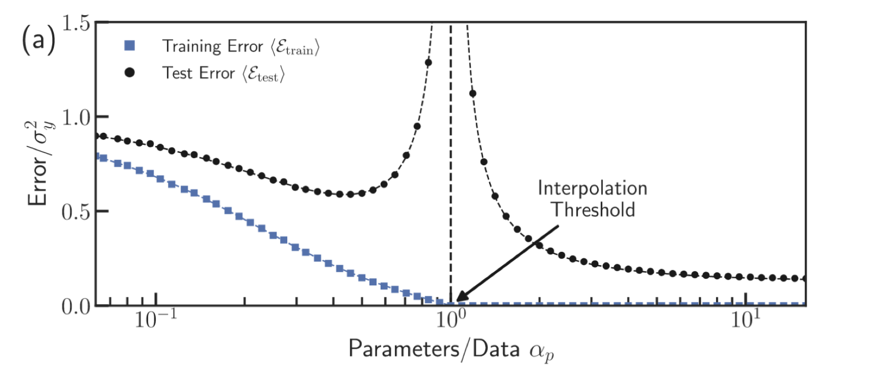
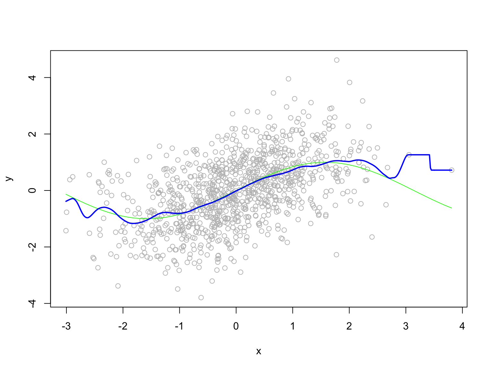
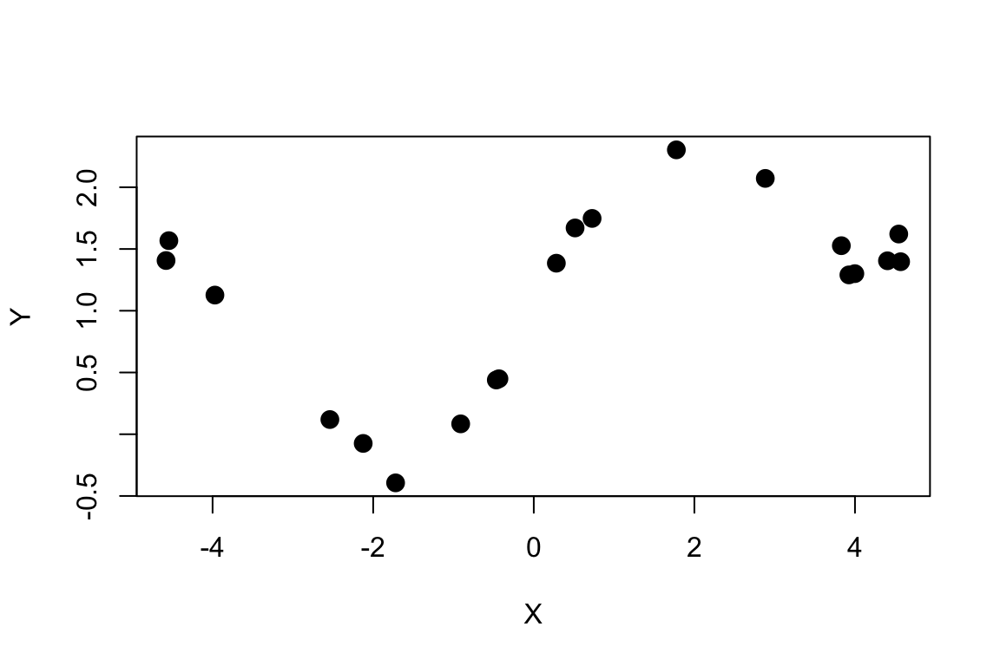
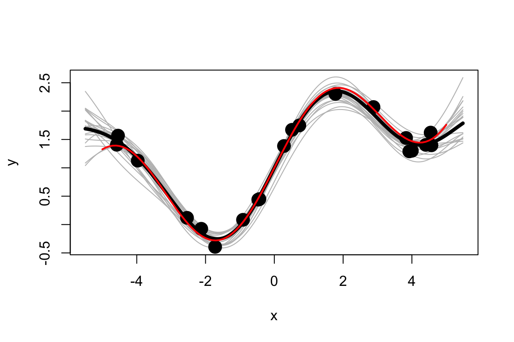

\[ \newcommand{\mc}[1]{\mathcal{#1}} \newcommand{\R}{\mathbb{R}} \newcommand{\E}{\mathbb{E}} \renewcommand{\P}{\mathbb{P}} \newcommand{\var}{{\rm Var}} % Variance \newcommand{\mse}{{\rm MSE}} % MSE \newcommand{\bias}{{\rm Bias}} % MSE \newcommand{\cov}{{\rm Cov}} % Covariance \newcommand{\iid}{\stackrel{\rm iid}{\sim}} \newcommand{\ind}{\stackrel{\rm ind}{\sim}} \renewcommand{\choose}[2]{\binom{#1}{#2}} % Choose \newcommand{\chooses}[2]{{}_{#1}C_{#2}} % Small choose \newcommand{\cd}{\stackrel{d}{\rightarrow}} \newcommand{\cas}{\stackrel{a.s.}{\rightarrow}} \newcommand{\cp}{\stackrel{p}{\rightarrow}} \newcommand{\bin}{{\rm Bin}} \newcommand{\ber}{{\rm Ber}} \DeclareMathOperator*{\argmax}{argmax} \DeclareMathOperator*{\argmin}{argmin} \]


A ``random function’’ \(f\) is said to follow a Gaussian process, denoted by \[ f \sim \mc{GP}(\mu, K), \] if for any \(x_1, \ldots, x_n\), the random vector \((f(x_1), \ldots, f(x_n))\) has a multivariate normal distribution, i.e., \[ \left[\begin{array}{c} f(x_1)\\ \vdots\\ f(x_n) \end{array}\right] \sim N\left(\left[\begin{array}{c} \mu(x_1)\\ \vdots\\ \mu(x_n), \end{array}\right], \left[\begin{array}{ccc} K(x_1, x_1) & \cdots & K(x_1, x_n)\\ \vdots & \ddots & \vdots\\ K(x_n, x_1) & \cdots & K(x_n, x_n) \end{array}\right]\right). \]
Notation: for \(x, x^{\prime} \in \R^n\), \(K(x, x^{\prime})\) is an \(n \times n\) matrix whose \((i,j)\)th entry is \(K(x_i, x^{\prime}_j)\).
Linear kernel: \(K(x, x^{\prime}) = x^Tx^{\prime}\).
Polynomial kernel: \(K_{c,d}(x, x^{\prime}) = (x^Tx^{\prime} + c)^d\).
Gaussian kernel: \(K_{\sigma}(x, x^{\prime}) = \exp\left(-\frac{\|x-x^{\prime}\|^2}{2\sigma^2}\right)\).
library(mvtnorm)
GP_sim <- function(from = 0, to = 1, mean_func = function(x){0},
cov_func = function(x1, x2){exp(-16*(x1-x2)^2)},
m = 500){
x <- seq(from, to, length.out = m)
mu <- sapply(x, mean_func)
Sigma <- outer(x, x, Vectorize(cov_func))
y <- rmvnorm(1, mu, Sigma)
return(list(x = x, y = y))
}Take \(n = 20\) and generate \(Y = \sin(X) + \exp(X/5) + \epsilon\) where \(\epsilon \sim N(0, 0.1^2)\).
Fit a Gaussian process regression model with \(\mu(x) = 0\) and Gaussian Kernel.
In practice, there are other unknown parameters, for example \(\sigma^2\) or the hyperparameters in the kernel function.
The hyperparameters in the kernel function can be selected via cross-validation.
However, as a Bayesian, we can consider a fully Bayesian hierarchical model \[\begin{align*} \tau^2 & \sim \text{InvGamma}(c,d) \\ \sigma^2 & \sim \text{InvGamma}(a ,b) \\ f_i \mid x, \tau & \iid N(0, K(x, x\mid \tau) \\ y_i \mid f_i, \sigma^2& \ind N\left(f_i, \sigma^2\right) \quad i = 1, \ldots, n \end{align*}\] where \(K(x, y) = \exp\left(-\frac{(x-y)^2}{2\tau^2}\right)\).
Additional priors can be assigned to the hyperparameters \(a,b,c\) and \(d\).
The posterior distribution is \(\pi(f, \sigma^2, \tau^2 \mid \mathbf{y}, \mathbf{x})\).
There are many other applications of GP: